クリスマス会で盛り上がるゲーム20選｜子供会・保育園・大人向けに対象別で紹介【プレゼント交換の方法も】
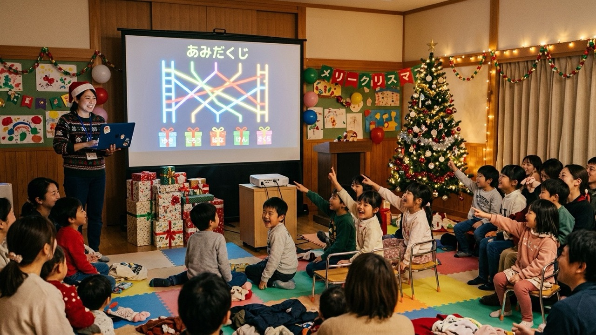
子供会や保育園のクリスマス会、友人や職場のクリスマスパーティー。担当になったものの、何のゲームをすれば盛り上がるのか、子どもが飽きずに参加できるのか、迷っていませんか。
この記事では、クリスマス会で使えるゲームを保育園・幼児向け、子供会・小学生向け、大人向けの3つに分けて紹介します。どのゲームも、いつもの遊びをクリスマス仕様にアレンジしたものなので、ルール説明に時間がかかりません。あわせて、クリスマス会の締めに欠かせないプレゼント交換の盛り上げ方と、会場のスクリーンやテレビに映すだけで盛り上がる演出、対象別の当日の進行例もまとめました。
記事内で紹介している「あみだくじメーカー」「ランキング動画メーカー」「格付けダービー」「トーナメント表アニメーター」は、当サイト（GraphRace Studio）が開発・運営している無料ツールです。ツールを使わずにできるゲームが中心なので、会場や参加者に合わせて選んでください。
クリスマス会のゲームの選び方
対象年齢で選ぶ
クリスマス会のゲーム選びでいちばん大事なのは、参加者の年齢に合っているかどうかです。同じゲームでも、年齢によって盛り上がるポイントが違います。
- 3歳以下：勝ち負けよりも「見つけた」「できた」がうれしい年齢です。ルールは1つだけにして、保育者や保護者と一緒に動けるものを選びます
- 4〜5歳：簡単なルールを理解して、チームで競うことも楽しめます。体を動かすゲームと、座ってできるゲームを組み合わせると集中が続きます
- 小学校低学年：体を動かすゲームとクイズがどちらも人気です。ルールは口頭で1分以内に説明できるものにします
- 小学校高学年：簡単すぎると盛り上がりません。チーム対抗や謎解きなど、頭を使う要素を入れると本気になります
- 大人：会話をしながら楽しめるものが中心です。食事やお酒の合間に差し込める、道具のいらないゲームが向いています
人数・会場・準備時間で選ぶ
- 人数：10人以下なら全員で1つのゲーム、20人を超えるならチームに分けて進めるのが基本です
- 会場の広さ：走り回るゲームは、ホールや保育室など机を片付けられる場所でだけ行います。公民館の和室やレストランでは、座ったままできるゲームを選びます
- 準備にかけられる時間：道具を手作りするゲームは前日までの準備が必要です。準備の時間が取れない場合は、道具なしでできるものを中心にします
対象×人数×準備の早見表
この記事で紹介する20個のゲーム・演出を一覧にしました。ゲーム名をタップすると、それぞれの説明に移動します。
| ゲーム | おすすめの対象 | 人数の目安 | 準備 | 主な道具 |
|---|---|---|---|---|
| 1. クリスマスバスケット | 保育園・子供会 | 10〜30人 | 少ない | 椅子 |
| 2. サンタさんがころんだ | 保育園・子供会 | 5人〜 | なし | なし |
| 3. オーナメント宝探し | 保育園 | 5〜30人 | ふつう | オーナメント、折り紙の星 |
| 4. プレゼント運びリレー | 保育園・子供会 | 10人〜 | ふつう | 段ボール、空き箱 |
| 5. サンタさんの福笑い | 保育園 | 何人でも | ふつう | 顔の台紙、パーツ、目隠し |
| 6. クリスマスクイズ大会 | 子供会・大人 | 何人でも | ふつう | 問題、スクリーンやフリップ |
| 7. クリスマスビンゴ | 子供会・大人 | 10人〜 | ふつう | 絵柄ビンゴカード |
| 8. クリスマスジェスチャーゲーム | 子供会・大人 | 6人〜 | 少ない | お題カード、タイマー |
| 9. 靴下の中身当てゲーム | 保育園・子供会 | 何人でも | 少ない | クリスマスの靴下、中に入れる物 |
| 10. 謎解き宝探し | 子供会（高学年） | 10〜40人 | 多い | ヒントカード、宝物 |
| 11. ペットボトルボウリング | 保育園・子供会 | 何人でも | ふつう | ペットボトル、ボール |
| 12. ワードウルフ | 大人・子供会（高学年） | 4〜8人 | なし | お題を書いた紙かスマホ |
| 13. カタカナ禁止ゲーム | 大人 | 4人〜 | なし | なし |
| 14. 10回クイズ | 大人・子供会 | 2人〜 | なし | なし |
| 15. 以心伝心ゲーム | 大人・親子 | 6人〜 | 少ない | フリップやホワイトボード |
| 16. クリスマスソングのイントロクイズ | 大人・親子 | 何人でも | 少ない | スマホ、スピーカー |
| 17. あみだくじでプレゼント交換・チーム分け | すべて | 2〜20人 | 少ない | パソコン、スクリーンやテレビ |
| 18. ランキング発表 | 子供会・大人 | 何人でも | ふつう | パソコン、スクリーンやテレビ |
| 19. トナカイレースの着順予想 | 子供会・大人 | 何人でも | ふつう | パソコン、スクリーンやテレビ |
| 20. じゃんけん大会のトーナメント表示 | 子供会・大人 | 4〜32人 | 少ない | パソコン、スクリーンやテレビ |
横にスクロールできます
保育園・幼児向けのクリスマス会ゲーム5選
幼児向けのゲームは、ルールを1つに絞り、待ち時間を短くするのがコツです。全員が「できた」で終われるように、勝ち負けよりも参加すること自体を楽しめるものを選びました。
1. クリスマスバスケット
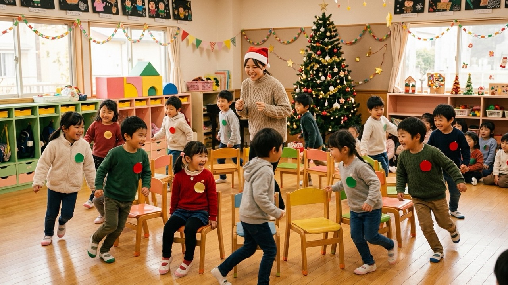
- 人数：10〜30人
- 所要時間：10〜15分
- 準備物：椅子（参加人数より1つ少なく）、役が分かるシールや帽子
- 遊び方：フルーツバスケットの果物を「サンタ」「トナカイ」「ツリー」に変えて遊びます。鬼が「トナカイ！」と言ったらトナカイの子だけが席を移動し、「メリークリスマス！」と言ったら全員が移動します
- 盛り上がるコツ：役ごとに色の違うシールを胸に貼っておくと、自分の役を忘れません。3歳児クラスは、保育者と手をつないで一緒に移動する形にすると安心です
2. サンタさんがころんだ
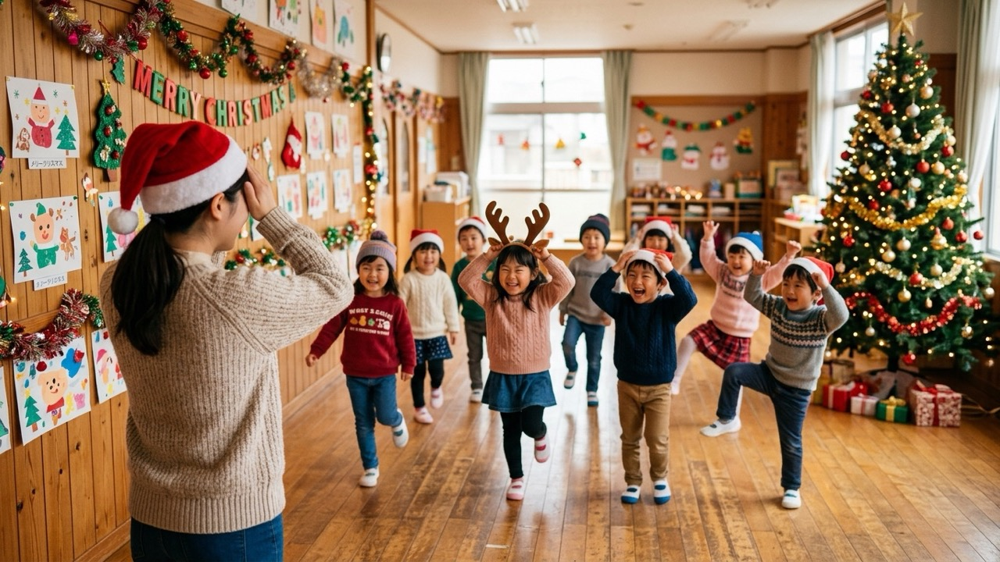
- 人数：5人〜
- 所要時間：10分
- 準備物：なし
- 遊び方：「だるまさんがころんだ」のクリスマス版です。鬼は「サンタさんがころんだ」と言って振り向きます。慣れてきたら「トナカイさんがころんだ」なら頭に角を作るポーズ、「ゆきだるまさんがころんだ」なら丸いポーズで止まる、というルールを足します
- 盛り上がるコツ：鬼をサンタの帽子をかぶった保育者が務めると、子どもたちの集中が一気に高まります。3歳児は動きを止めるだけのシンプルなルールにします
3. オーナメント宝探し
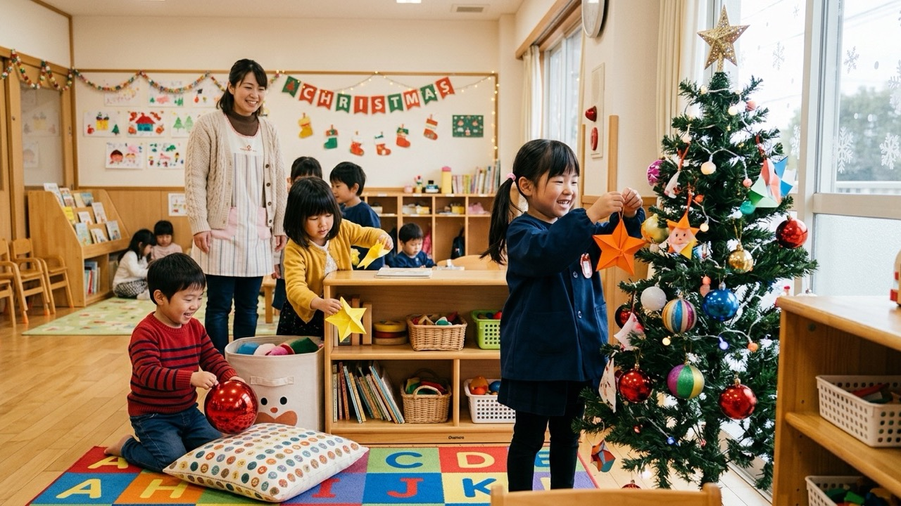
- 人数：5〜30人
- 所要時間：10〜15分
- 準備物：オーナメントや折り紙で作った星（参加人数より多め）、クリスマスツリー
- 遊び方：部屋のあちこちに隠したオーナメントを探します。見つけたものを自分でツリーに飾りに行き、最後に全員でツリーを完成させます
- 盛り上がるコツ：「1人1つまで」と決めておくと、たくさん見つける子と見つけられない子の差が出ません。低い位置にも分かりやすく隠しておき、全員が必ず1つは見つけられるようにします
4. プレゼント運びリレー（ソリレース）
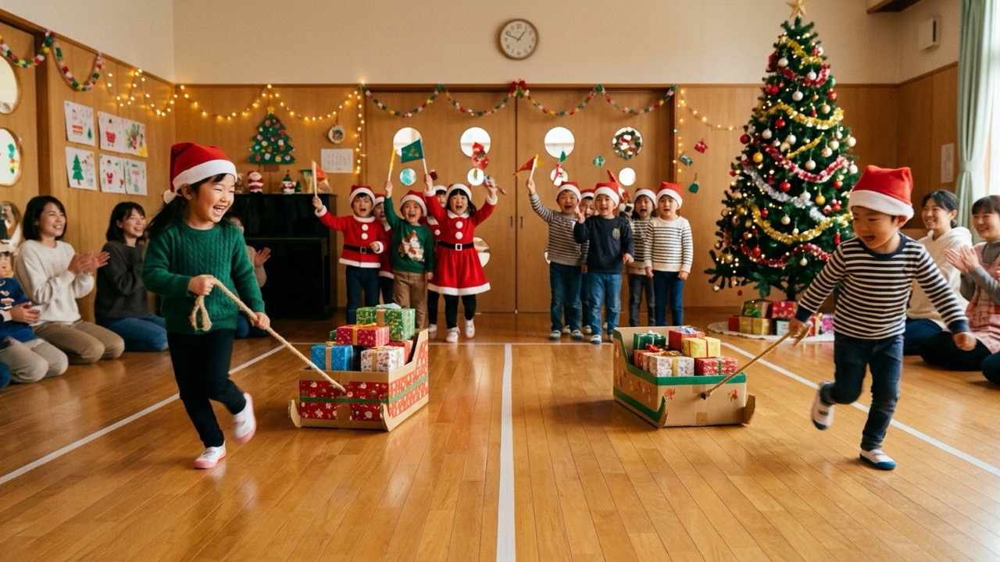
- 人数：1チーム5〜8人
- 所要時間：10〜15分
- 準備物：ひもを付けた段ボール（ソリ）、包装紙で包んだ空き箱
- 遊び方：サンタになった子が、プレゼントの箱を載せたソリを引いて折り返し地点まで運び、次の子に交代します。途中で箱が落ちたら、その場で載せ直してから進みます
- 盛り上がるコツ：ゴールにツリーを置き、最後の子がプレゼントをツリーの下に置いたらゴールにすると、クリスマスらしさが出ます。4〜5歳児クラス向けです
5. サンタさんの福笑い
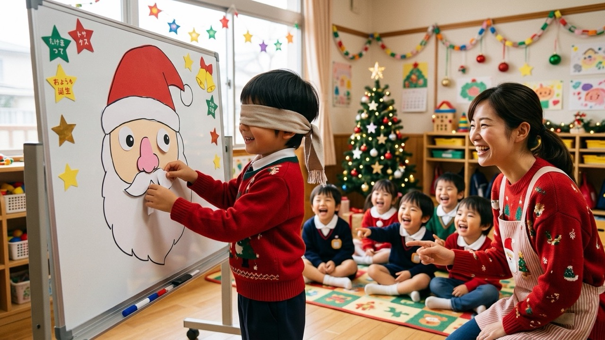
- 人数：何人でも（1人ずつ挑戦）
- 所要時間：1人1〜2分
- 準備物：サンタの顔の輪郭を描いた台紙、目・鼻・口・ひげ・帽子のパーツ、目隠し
- 遊び方：目隠しをした子が、周りの「もっと上！」「右だよ！」という声を頼りにパーツを置いていきます
- 盛り上がるコツ：目隠しを嫌がる子には、目をつぶるだけでもよいことにします。パーツの裏にマグネットを貼り、ホワイトボードで行うと全員から見えやすくなります
走るゲームを行うときは、机や椅子の角、ツリーの飾りなど、ぶつかると危ない物を片付けてから始めてください。3歳未満の子が参加する会では、トイレットペーパーの芯を通る大きさ（直径約39mm以下）の小物は誤飲の危険があるため、宝探しや景品に使わないようにします。
子供会・小学生向けのクリスマス会ゲーム6選
子供会は、低学年から高学年まで年齢の幅が広いのが特徴です。誰でも参加できるクイズやビンゴと、高学年が本気になれる謎解きを組み合わせると、全員が楽しめます。
6. クリスマスクイズ大会
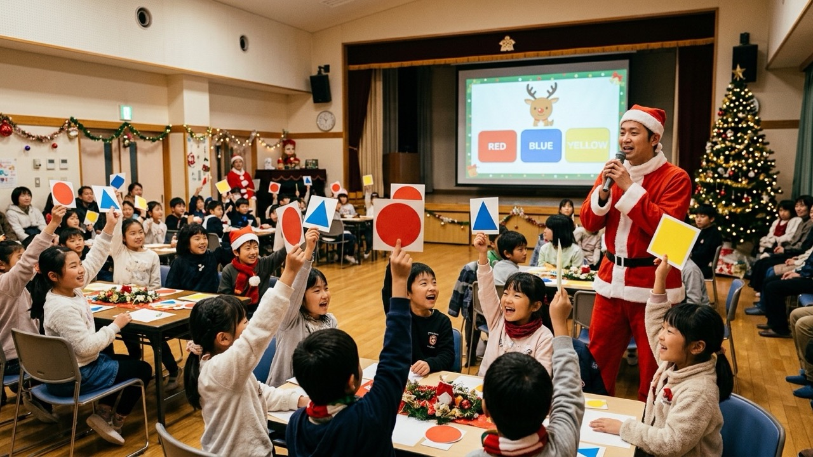
- 人数：何人でも（チーム戦にも対応）
- 所要時間：15〜20分
- 準備物：問題を映すスライド、またはフリップ。答えを示すための〇×カードや三択カード
- 遊び方：クリスマスにちなんだ問題を三択や〇×で出題します。たとえば「サンタクロースのソリを引く動物は？」は低学年向け、「トナカイの角は、オスにしか生えない。〇か×か？（答えは×。メスにも生える）」は高学年や大人も迷う問題です
- 盛り上がるコツ：低学年向けと高学年向けの問題を交互に出すと、どちらも飽きません。正解をすぐ言わずに、少しためてから発表すると盛り上がります
クイズをスクリーンに映して出題する方法や、正解発表を盛り上げる演出は、盛り上がるクイズ動画の作り方｜幼稚園・小学校のクラス会アイデアで詳しく紹介しています。
7. クリスマスビンゴ
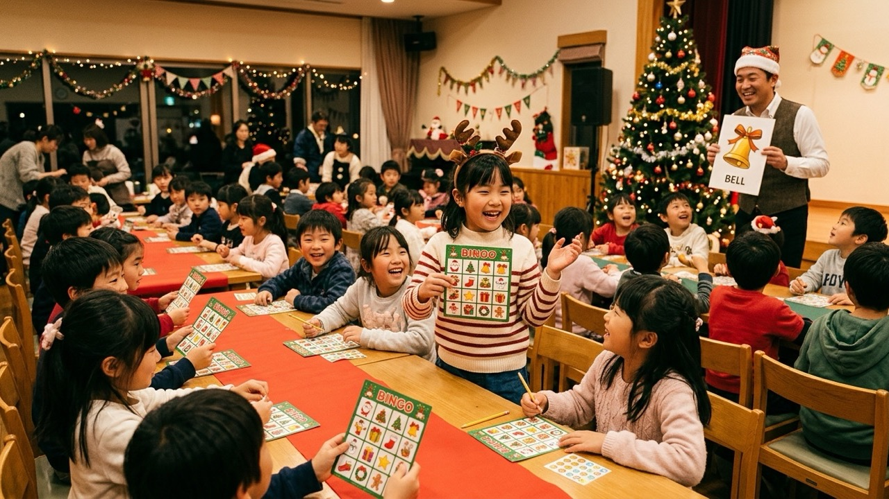
- 人数：10人〜
- 所要時間：20〜30分
- 準備物：サンタ・ツリー・ベル・くつしたなどの絵柄を並べたビンゴカード、読み上げ用の絵柄カード
- 遊び方：数字の代わりにクリスマスの絵柄でビンゴをします。字が読めない子も参加できるのが利点です
- 盛り上がるコツ：低学年が多い場合は3×3のマスにして、早めにビンゴが出るようにします。リーチの子に立ってもらうと、会場全体が状況を共有できます
8. クリスマスジェスチャーゲーム
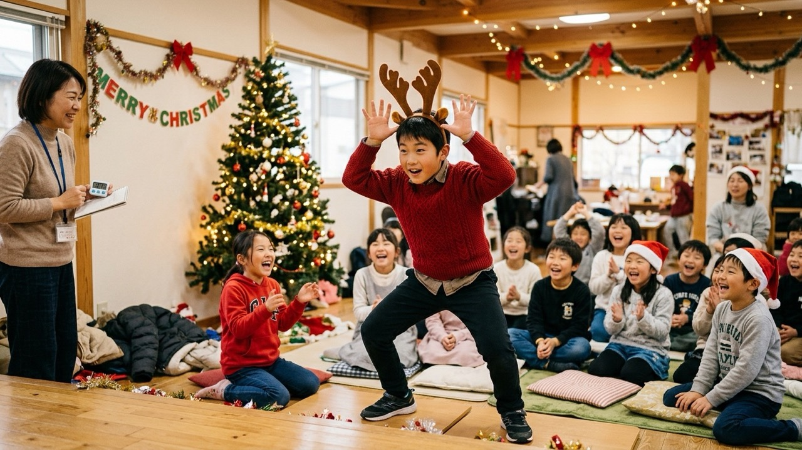
- 人数：6人〜（2チーム以上に分ける）
- 所要時間：10〜15分
- 準備物：お題カード、タイマー
- 遊び方：お題を体の動きだけで表現し、同じチームの仲間に当ててもらいます。「トナカイ」「雪だるまを作る」「プレゼントを開ける」「煙突から入るサンタ」など、動きで表しやすいお題を用意します
- 盛り上がるコツ：1チーム1分で何問当てられるかを競います。高学年や大人には「サンタが寝坊する」のような、少しひねったお題を混ぜると笑いが起きます
9. 靴下の中身当てゲーム
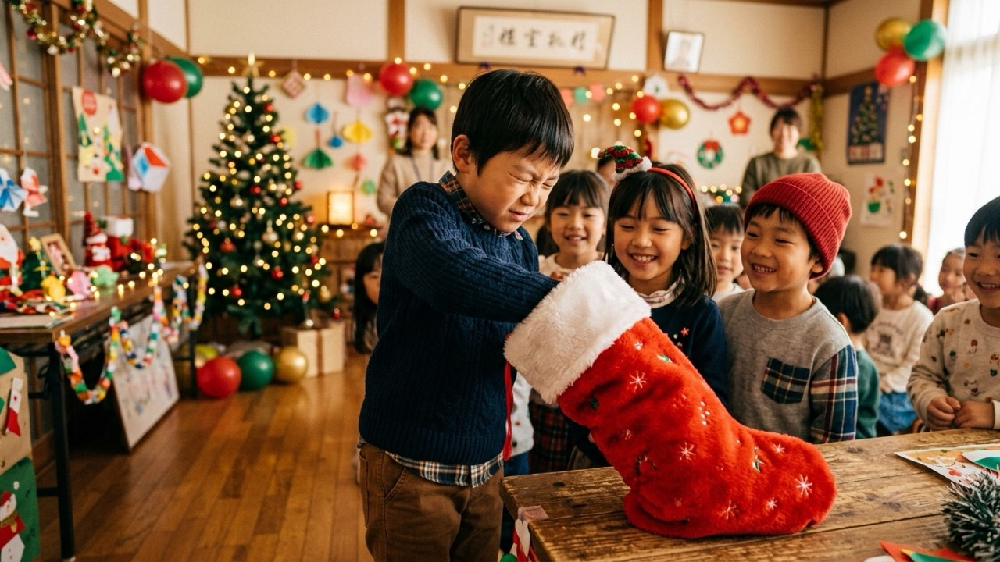
- 人数：何人でも
- 所要時間：10分
- 準備物：中が見えないクリスマスの靴下（5〜10個）、中に入れる物（みかん、まつぼっくり、鈴、消しゴムなど）
- 遊び方：靴下に手を入れて、触った感触だけで中身を当てます。答えは紙に書いて、最後にまとめて答え合わせをします
- 盛り上がるコツ：スライム風のおもちゃや、毛糸玉のような「何か分からない感触」を1つ混ぜると盛り上がります。座ったままできるので、狭い会場や休憩明けにも向いています
10. 謎解き宝探し（高学年向け）
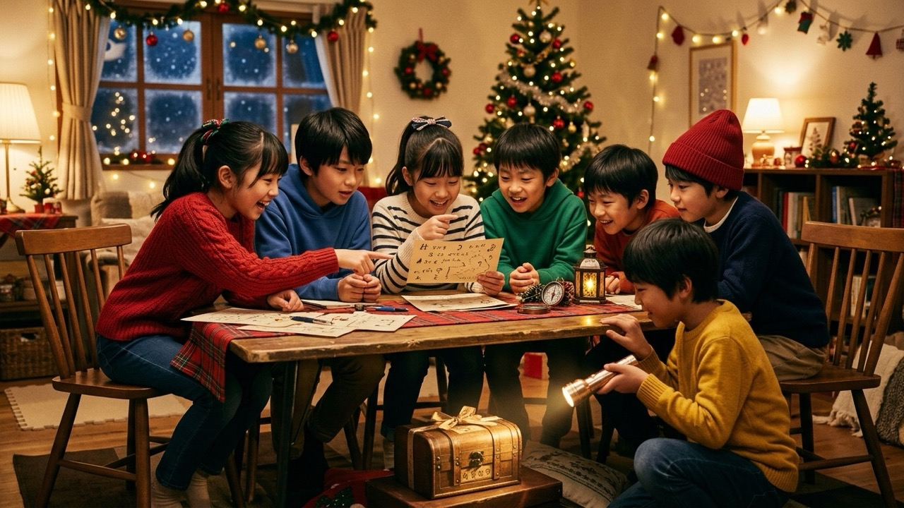
- 人数：10〜40人（1チーム4〜6人）
- 所要時間：20〜30分
- 準備物：ヒントカード（3〜5枚）、最後に見つける宝物（プレゼントやお菓子）
- 遊び方：1枚目のヒントを解くと次のヒントの隠し場所が分かり、最後のヒントで宝物の場所にたどり着きます。暗号や、クリスマスの言葉を使ったなぞなぞをヒントにします
- 盛り上がるコツ：チームごとにヒントを回る順番を変えておくと、1か所に人が集まりません。チームに低学年が入る場合は、絵で解けるヒントを1枚入れておきます
11. ペットボトルボウリング
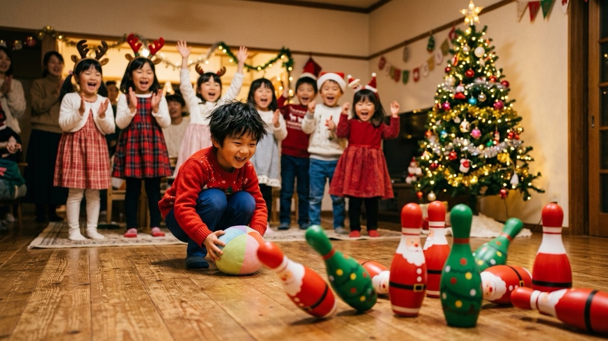
- 人数：何人でも（1人ずつ、またはチーム戦）
- 所要時間：15〜20分
- 準備物：ペットボトル（6〜10本）、ボール、赤や緑の色紙
- 遊び方：赤や緑の色紙を巻いてツリーやサンタに見立てたペットボトルを並べ、ボールを転がして倒した本数を競います
- 盛り上がるコツ：ペットボトルに少し水を入れると倒れにくくなり、難しさを調整できます。幼児は投げる位置を前にするハンデを付けると、年齢差があっても一緒に遊べます
異学年のチーム分けは「あみだくじ」で公平に
子供会でチーム対抗のゲームを行うときは、低学年と高学年が同じチームに入るように分けると、高学年が自然と年下の子をフォローしてくれます。ただ、大人がメンバーを決めると「仲のいい子と一緒になれない」といった不満が出ることもあるので、その場で抽選して見せると子どもたちも納得しやすくなります。
あみだくじメーカーの「チーム分け」モードなら、参加者の名前を入力してチーム数（2〜6チーム）を選ぶだけで、均等な人数に自動で振り分けられます。学年が偏らないようにしたい場合は、先に学年ごとにくじを引いてから合流するなど、いくつかの方法があります。詳しくはチーム分けの方法12選｜簡単で盛り上がる分け方と偏らないコツをご覧ください。

大人向けのクリスマス会ゲーム5選
大人のクリスマス会は、食事や会話そのものが楽しみの中心です。ゲームは歓談の合間に差し込める、道具のいらないものを選びました。
12. ワードウルフ
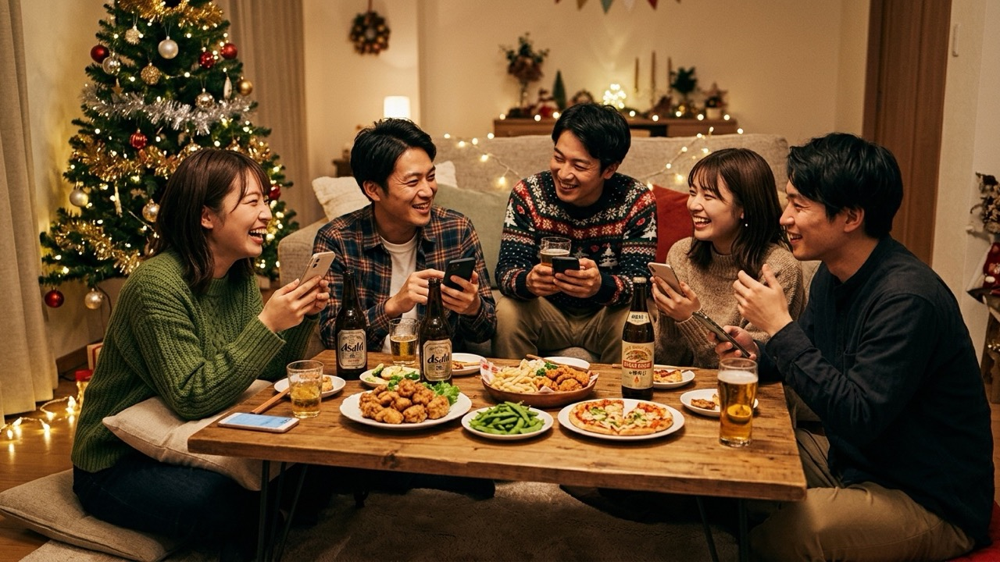
- 人数：4〜8人
- 所要時間：1回5分前後
- 準備物：お題を書いた紙、またはスマホアプリ
- 遊び方：全員にお題を配りますが、1人だけ少し違うお題を持っています。お題について話し合いながら、違うお題を持つ「ウルフ」が誰かを推理して当てます
- 盛り上がるコツ：クリスマスらしいお題の組み合わせにすると季節感が出ます。たとえば「クリスマスケーキ／バースデーケーキ」「イルミネーション／花火」「クリスマスカード／年賀状」などです
13. カタカナ禁止ゲーム
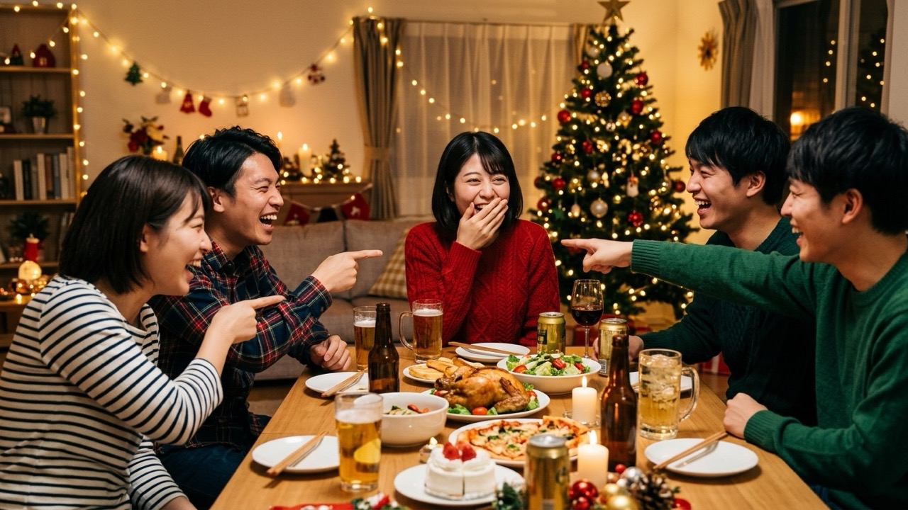
- 人数：4人〜
- 所要時間：歓談中ずっと、または1回5分
- 準備物：なし
- 遊び方：カタカナの言葉を使わずに会話をします。クリスマスの話題は「サンタ」「プレゼント」「ケーキ」などカタカナだらけなので、つい口にしてしまいます
- 盛り上がるコツ：「クリスマスの思い出を話す」などテーマを決めると、カタカナを避けるのが一気に難しくなります。言ってしまった人には罰ゲームではなく、次の話題を振る役をお願いする程度にします
14. 10回クイズ
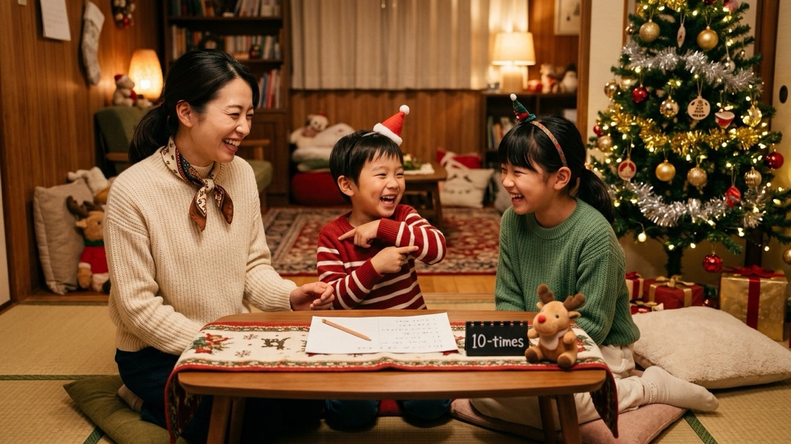
- 人数：2人〜
- 所要時間：1問1分
- 準備物：なし
- 遊び方：ある言葉を10回言ってもらったあとに、似た響きの答えを誘う質問をします。たとえば「シャンデリア」と10回言ってもらってから「毒りんごを食べたのは？」と聞くと、つい「シンデレラ」と答えてしまう人が出ます（正解は白雪姫）
- 盛り上がるコツ：子どもも一緒に楽しめるので、親子が参加する会でも使えます。前もって3〜5問用意しておくと、場が静かになったときにすぐ出せます
15. 以心伝心ゲーム
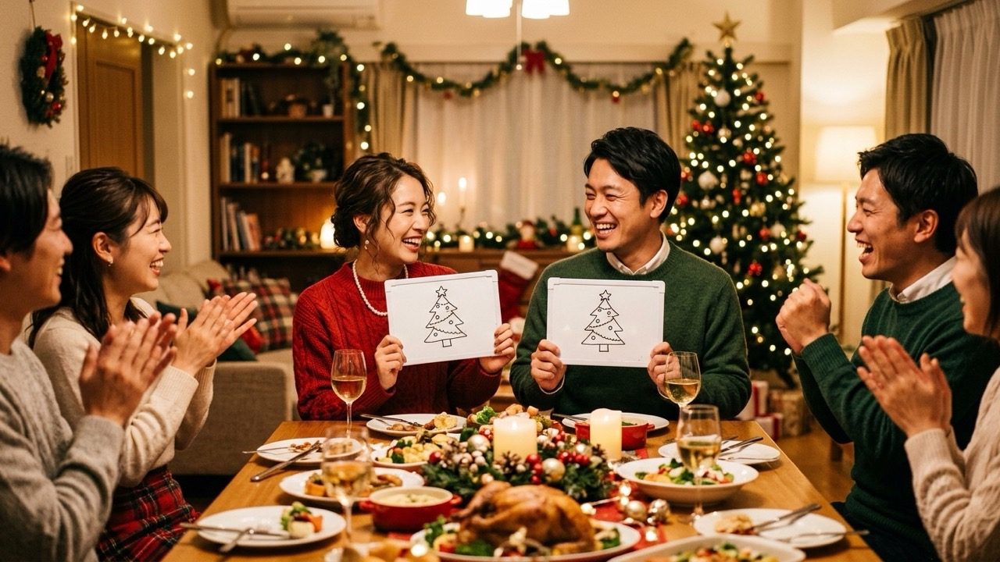
- 人数：1チーム2〜5人
- 所要時間：10分
- 準備物：フリップやホワイトボード、ペン
- 遊び方：「クリスマスに食べたいものといえば？」などのお題に、チーム全員が相談せずに答えを書き、全員の答えがそろえば得点です
- 盛り上がるコツ：夫婦や親子でペアを組むと、答えがそろったときもずれたときも盛り上がります。「サンタにお願いしたいものは？」のように答えが割れやすいお題を混ぜると、難しさに変化が出ます
16. クリスマスソングのイントロクイズ
- 人数：何人でも（チーム戦にも対応）
- 所要時間：15分
- 準備物：曲を流すスマホやパソコン、スピーカー
- 遊び方：クリスマスソングのイントロを数秒だけ流し、曲名を当ててもらいます。分かった人から手を挙げて答えます
- 盛り上がるコツ：定番の童謡から最近のヒット曲まで年代を混ぜると、世代ごとに得意な曲が違って盛り上がります。親子が参加する会では、子どもが知っている童謡を必ず入れます
大人数の会社のパーティーや、ビンゴ・景品抽選を中心にした会を企画している場合は、忘年会で盛り上がるゲーム・余興15選も参考になります。
プレゼント交換を盛り上げる方法
クリスマス会のクライマックスといえばプレゼント交換です。ここでは定番の方法と、それぞれの向き不向きを紹介します。
音楽に合わせたプレゼント回し
全員で輪になり、音楽に合わせてプレゼントを隣の人へ回していきます。音楽が止まったときに手元にあるプレゼントが、自分のものになります。ルールが簡単で、全員が同時に参加できるのが利点です。10人を超えると回すのに時間がかかるので、その場合はいくつかの輪に分けます。小さな子は落としやすいので、隣の大人が手を添えてあげてください。
あみだくじ（紙・スクリーン）
上に参加者の名前、下にプレゼントの番号を書いて、あみだくじで誰がどのプレゼントをもらうかを決めます。紙で作る場合は、大きな模造紙に書いて壁に貼ると全員で見られます。会場にスクリーンやテレビがあるなら、あみだくじメーカーをスクリーンに映す方法なら書く手間がなく、線をたどるアニメーションで盛り上がります。
番号くじ・椅子取りゲーム方式
プレゼントに番号を付けておき、参加者が番号の書かれたくじを引く方法です。手早く終わるので、人数が多い会に向いています。椅子の下に番号を貼っておき、椅子取りゲームのように音楽が止まったときに座った椅子の番号のプレゼントをもらう方式にすると、ゲームとプレゼント交換を1度に楽しめます。
自分のプレゼントが当たらないようにするには
どの方法でも、自分が持ってきたプレゼントが自分に戻ってくることがあります。事前に「自分のプレゼントが当たったら、隣の人と交換する」とルールを決めておくと、当日に慌てずに済みます。
あみだくじを使う場合は、名前の真下に本人のプレゼントを置かないようにしてください。あみだくじは横線が少ないと、スタート位置の真下付近に落ちやすい性質があるためです。くわしくはあみだくじの確率｜当たりやすい場所・必勝法・公平にする方法を計算で検証で解説しています。
プレゼントの予算は「500円程度」「1,000円以内」のように具体的に決めて、参加者に伝えておきます。子どもが参加する会では、年齢を問わず使える文房具やお菓子にする、食べ物はアレルギーに配慮して個包装の市販品に限る、といったルールも一緒に共有しておくとトラブルを防げます。
スクリーンに映して盛り上がる演出アイデア4選
会場にプロジェクターや大型テレビがあるなら、画面に映す演出を1つ入れるだけで、クリスマス会の印象はぐっと変わります。全員が同じ画面を見ながら声を上げられるので、人数が多い会や、走り回れない会場ほど効果的です。
ここでは、ブラウザだけで使える4つの演出を紹介します。まずは比較表で、会の規模と準備時間に合うものを選んでください。
| 演出 | 使うツール | 向いている人数 | 作成時間の目安 | クリスマス会での使い方 |
|---|---|---|---|---|
| プレゼント交換・チーム分け | あみだくじメーカー | 2〜20人 | 約5分 |
|
| ランキング発表 | ランキング動画メーカー | 人数制限なし （項目は最大50） |
15〜30分 （画像を入れる場合） |
|
| 着順予想レース | 格付けダービー | 出走は2〜16頭 （観戦は何人でも） |
10〜15分 （＋録画約1分） |
|
| 勝ち抜き戦の表示 | トーナメント表アニメーター | 4〜32人（組） | 約10分 |
|
横にスクロールできます
17. プレゼント交換・チーム分け：あみだくじメーカー
プレゼント交換を、スクリーンの上で公平に行えます。あみだくじメーカーに参加者の名前と、プレゼントの番号（「プレゼント1」「プレゼント2」など）を1行ずつ入力するだけで、あみだくじが自動で作られます。名前をタップすると光の玉が線をたどり、ゴールに着くと紙吹雪が舞います。
- 全員スタートと個別スタート：一斉に結果を出すことも、1人ずつ名前を呼んでタップすることもできます。子どもに自分の名前をタップしてもらうと、それだけで大喜びします
- 効果音と全画面表示：プロジェクター投影を想定した全画面表示モードがあり、効果音もオン・オフを切り替えられます
- 結果をすぐ共有：結果はテキストコピーやPNG画像で保存できるので、プレゼントの渡し間違いを防げます

1回のくじで使えるのは20人までです。21人以上の会では、テーブルやクラスごとにくじを分けて何回か回すと、1回の抽選が長くなりすぎません。
18. アンケート結果やクイズの答え合わせ：ランキング動画メーカー
事前にアンケートをとっておき、その結果をランキング形式で発表する演出です。子供会なら「サンタさんにお願いしたいものランキング」「好きなクリスマスの食べ物ランキング」、大人の会なら「今年いちばん印象に残った出来事」など、お題を変えるだけで何度でも使えます。
ランキング動画メーカーでは、順位ごとに名前・説明・画像を入力すると、カードが右から流れてきて1位まで順番にランクインしていきます。発表の前に「1位はどれだと思う？」と会場に予想させれば、クイズとしても楽しめます。
画像の入れ方や縦型・横型の切り替えなど、操作の手順はYouTubeでよく見るランキング動画の作り方で詳しく解説しています。
19. トナカイレースの着順予想：格付けダービー
ランキングの発表を、競馬中継風のレースで見せる演出です。格付けダービーでは、あらかじめ最終着順を決めておくと、道中の展開は毎回変わりながら、ゴールでは必ずその順番になります。出走馬の名前を「ルドルフ」「ダッシャー」などのトナカイの名前や、チーム名にすれば、クリスマス会らしいレースになります。
おすすめの使い方は、チーム対抗戦の結果発表です。
- 出走馬をチーム名にする「赤組」「白組」のように、その日のチームを出走馬として登録しておきます。
- ゲームの合計点で着順を決める出走馬リストは上から最終着順です。休憩中などに合計点を集計し、順位どおりに並べ替えます。
- どのチームが1着かを予想させてから再生する結果が決まっていても、レースの展開で会場は大盛り上がりします。
クイズの正解をレースで発表する使い方は、盛り上がるクイズ動画の作り方でも紹介しています。詳しい設定方法は競馬風の順位発表動画「格付けダービー」の作り方をご覧ください。
20. じゃんけん大会のトーナメント表示：トーナメント表アニメーター
子どもから大人まで一緒に楽しめるじゃんけん大会や、ペットボトルボウリングの対戦など、勝ち抜き戦を行うときに使える演出です。トーナメント表アニメーターに参加者（4〜32人）を登録してスクリーンに映しておき、試合が終わるたびに勝者をクリックすると、勝ち上がりの線がアニメーションで伸びていきます。
画面を見れば次の対戦相手がひと目で分かるので、進行役が何度も読み上げる必要がありません。優勝者には、プレゼントを最初に選べる権利を渡すと、プレゼント交換にもつなげられます。

操作の詳細は動くトーナメント表の作り方で紹介しています。
当日の準備と注意点
- 前日までに作って一度通しで再生する：名前の誤字や、画像の表示崩れがないかを確認します。子どもの名前の漢字は特に念入りに確認してください
- 会場の設備を確認する：プロジェクターやテレビの有無、HDMIなどの接続端子、音をスピーカーから出せるかを、会場の管理者に確認しておきます
- ページは会場に着く前に開いておく：4つのツールはデータの処理がブラウザ内で完結するため、ページを開いておけば会場のWi-Fiが不安定でもそのまま操作できます。格付けダービーの3D表示は、事前に録画した動画を持っていくのが確実です
- パソコンの通知をオフにする：投影中にチャットやメールの通知が映らないよう、集中モードなどで通知を止めておきます
当日の進行例（保育園・子供会・大人）
この記事で紹介したゲームを組み合わせた、対象別の進行例です。時間配分の目安として使ってください。
保育園のクリスマス会（45分）
| 時間 | 内容 | ポイント |
|---|---|---|
| 0:00〜0:05 | はじまりの会 | クリスマスの歌を1曲歌って気持ちを盛り上げる |
| 0:05〜0:20 | クリスマスバスケット | 最初は保育者が鬼になり、ルールを見せながら始める |
| 0:20〜0:30 | オーナメント宝探し | 見つけたオーナメントを飾って、みんなのツリーを完成させる |
| 0:30〜0:40 | サンタさん登場・プレゼント | 宝探しで完成したツリーの前でサンタを迎えると、流れが自然につながる |
| 0:40〜0:45 | おわりの会 | 楽しかったことを何人かに発表してもらう |
横にスクロールできます
子供会のクリスマス会（90分）
| 時間 | 内容 | ポイント |
|---|---|---|
| 0:00〜0:05 | 開会のあいさつ | 今日の流れを最初に伝えておく |
| 0:05〜0:15 | サンタさんがころんだ | 全員で体を動かして、緊張をほぐす |
| 0:15〜0:20 | チーム分け | あみだくじメーカーのチーム分けモードをスクリーンで実施 |
| 0:20〜0:40 | チーム対抗クリスマスクイズ | 低学年向けと高学年向けの問題を交互に出す |
| 0:40〜0:55 | おやつ・休憩 | この間にチームの合計点を集計しておく |
| 0:55〜1:10 | クリスマスビンゴ、または謎解き宝探し | 高学年が多い会は謎解き、低学年が多い会はビンゴがおすすめ |
| 1:10〜1:15 | チーム対抗戦の結果発表 | 格付けダービーのレースで発表すると盛り上がる |
| 1:15〜1:25 | プレゼント交換 | あみだくじか、音楽に合わせたプレゼント回しで |
| 1:25〜1:30 | 閉会のあいさつ | 参加賞を全員に配って終わる |
横にスクロールできます
大人のクリスマス会（2時間）
| 時間 | 内容 | ポイント |
|---|---|---|
| 0:00〜0:10 | 乾杯 | あいさつは短めに |
| 0:10〜0:40 | 歓談 | カタカナ禁止ゲームを仕込んでおくと会話が弾む |
| 0:40〜1:00 | ワードウルフ、または以心伝心ゲーム | テーブルごとや、カップル・夫婦のペアで |
| 1:00〜1:25 | 歓談・ケーキ | 料理の追加や飲み物の注文が落ち着くタイミング |
| 1:25〜1:40 | クリスマスソングのイントロクイズ | 正解数の多い人から、プレゼントを選ぶ順番を決めてもよい |
| 1:40〜1:55 | プレゼント交換 | あみだくじをスクリーンに映して、1人ずつスタートすると盛り上がる |
| 1:55〜2:00 | 締めのあいさつ | 集合写真を撮るならこのタイミングで |
横にスクロールできます
失敗しないための注意点
- ルール説明は1分以内に：説明が長いと、子どもは始まる前に飽きてしまいます。口で説明するより、大人が1回やって見せるほうが早く伝わります
- 全員に参加賞を用意する：ゲームで勝てなかった子が泣いてしまうのはよくあることです。勝ち負けに関係なく全員に同じ参加賞を渡すと、会の最後を笑顔で終えられます
- お菓子の景品はアレルギーを確認する：子どもが参加する会では、事前に保護者へアレルギーの有無を確認し、景品は原材料が分かる個包装の市販品にします
- 写真をSNSに載せるときは同意をとる：子どもの顔が写った写真や動画を公開する場合は、事前に保護者の同意を得てください
- 大人の会でも罰ゲームやお酒の強要はしない：負けた人への罰ゲームより、勝った人へのプレゼントの形にすると角が立ちません
よくある質問（FAQ）
クリスマス会のゲームはいくつ用意すればいいですか？
保育園の45分程度の会なら2つ、子供会の90分程度の会なら3〜4つ、大人の2時間の会なら1〜2つが目安です。どの場合も、時間が余ったときのために道具のいらないゲームを1つ予備に用意しておくと安心です。
子供会のクリスマス会の景品はどれくらいの予算にすればいいですか？
決まった相場はなく、子供会の会費や予算によって変わります。ゲームの勝ち負けに関係なく全員に同じ参加賞を用意し、ゲームの賞品は小さなお菓子や文房具にとどめると、もらえなかった子が出にくくなります。
幼児と小学生が混ざっている場合はどうすればいいですか？
年齢を混ぜたチームを作り、高学年の子に低学年や幼児のサポート役をお願いすると、全員が参加しやすくなります。クイズは三択にして、問題ごとに幼児向けと小学生向けを交互に出すと、どちらも飽きずに楽しめます。
狭い会場や雨の日でもできるゲームはありますか？
あります。クリスマスクイズ、靴下の中身当て、福笑い、以心伝心ゲーム、イントロクイズなどは座ったままできます。スクリーンに映すあみだくじやランキング発表も、走り回らずに全員で盛り上がれる演出です。
少人数やオンラインのクリスマス会でも使えますか？
使えます。ワードウルフや以心伝心ゲームは4〜6人程度がいちばん盛り上がります。オンラインの場合は、クイズやイントロクイズのほか、あみだくじやランキング発表もブラウザの画面を共有すれば参加者全員で同時に見られます。
クリスマスソングをBGMやイントロクイズに使ってもいいですか？
保育園や子供会のクリスマス会のように、非営利・参加無料・出演者に報酬なしの条件で流すだけなら、許諾なく使える場合があります（著作権法38条）。一方、録画した動画をSNSや動画サイトに公開する場合は対象外になるため、著作権フリーの音源を使うのが安全です。会場を借りている場合は、施設のルールも事前に確認してください。
まとめ
クリスマス会のゲームは、参加者の年齢に合ったものを選び、最後のプレゼント交換でしっかり盛り上げるのが成功のコツです。いつもの遊びをクリスマス仕様にアレンジするだけでも、子どもたちにとっては特別なゲームになります。
- 保育園・幼児：クリスマスバスケットとオーナメント宝探し。ルールは1つに絞り、全員が「できた」で終われるようにする
- 子供会・小学生：チーム対抗のクリスマスクイズと謎解き宝探し。チームは学年を混ぜて、あみだくじで公平に決める
- 大人：ワードウルフとイントロクイズ。歓談の合間に差し込める道具なしのゲームが中心
- 共通：プレゼント交換は、自分のプレゼントが当たったときのルールを事前に決めておく
会員登録やアプリのインストールは不要。参加者とプレゼントを入力するだけで、アニメーションつきのあみだくじが作れます。